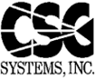
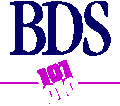
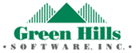

The Conference Committee wants to thank this year's sponsors for their generous support:
Official Sponsors
|
|
Abbott Laboratories has been in the business of improving lives for more than a century. Their 54,000 employees around the world are dedicated to discovering, developing and marketing innovative health care solutions across the spectrum of health care. | |
| Commonwealth Edison is engaged principally in the production, purchase, transmission, distribution and sale of electricity to both wholesale and retail customers. The geographical area in which ComEd provides retail service extends across one-fifth of the state of Illinois and includes the city of Chicago. ComEd serves more than 3.3 million customers, representing 8.2 million people or approximately 70 percent of the state's population. | ||
| Crowe Chizek is the 10th largest CPA/Consulting firm in the United States. Founded in 1942, today they have over 900 client services professionals. Quality work is at the foundation of creating value for our clients and involves work which is directed at your needs, competently performed and technically correct. Quality service involves prompt and efficient service delivery and communication. Developing a personal relationship with you involves properly managing expectations and perceptions of service through carefully nurtured personal relationships, trust, and commitment. | ||
|  | CSG Systems, Inc. provides customer care and billing solutions worldwide for the converging communications markets, including cable television, direct broadcast satellite, telephony, on-line services and others. | |
|
Component Software International, Inc. is a dynamic team of experienced and innovative software engineers, project managers, and quality assurance professionals. We develop customized software programs to transform our healthcare clients' visions into reality. We embrace the challenge to design and build successful software solutions which satisfy and solve our clients' business objectives.
Component Software International. On time. On target. On budget. |
||
| International Telecommunication Data Systems is the second largest provider of service bureau billing services to wireless communications carriers and resellers in the world. The Company offers a variety of core billing applications which form the foundation for its integrated suite of ancillary support systems that provide not only subscriber billing and service support, but also the means to automate subscriber activation, remittance processing, collections, data retrieval and reporting, electronic funds transfer, credit management, inventory management and data archiving. | ||
| Lante Corporation is a nationally recognized leader in the development and integration of electronic commerce and Internet-based solutions. | ||
| Lucent Technologies designs, develops, manufactures, and markets telecommunications systems, and technologies ranging from the smallest microchips to huge voice and data networks. | ||
| Motorola is one of the world's leading providers of wireless communications, semiconductors and advanced electronic systems, components and services. Major equipment businesses include cellular telephone, two-way radio, paging and data communications, personal communications, automotive, defense and space electronics and computers. Motorola semiconductors power communication devices, computers and millions of other products. | ||
| Drawing on the talents of more than 140,000 people in 152 countries, PricewaterhouseCoopers, formed by the merger of Price Waterhouse and Coopers & Lybrand, provides a full range of business advisory services to leading global, national, and local companies and to public institutions. These services include audit, accounting and tax advice; management, information technology and human resource consulting; financial advisory services including mergers & acquisitions, business recovery, projects finance and litigation support; business process outsourcing services; and legal advice through a global network of affiliated law firms. We have organized industry-focused teams to provide multi-disciplined services to 22 industries globally. | ||
| STR is an innovative consulting firm that partners with its clients to deliver practical business solutions in fields such as telecommunications, finance and supply chain management. With years of experience in object, web and Java technologies, STR understands how to create next-generation systems while reducing risk and preserving investments in existing resources. STR is dedicated to providing superior planning, implementation and training services that give its clients a competitive edge and a clear path for growth. | ||
| Wolfram Research is the world's leading developer of technical computing software. The company was founded by Stephen Wolfram in 1987 and released the first version of its flagship product Mathematica on June 23, 1988. Since that time, the company has grown rapidly and has released a sequence of related technical computing products. | ||
| Advanced Information Services Inc., a rapidly growing high technology corporation, provides its clients with a complementary set of quality products and services in software development, consulting, internet services, and software process training. | ||
| Allstate Insurance agents have the commitment, training and education to serve you and help you manage your insurance needs. Many companies are judged solely by their products. At Allstate, we know we're also defined by our agents and the customer service they provide. That's why we've built a strong agency force, armed them with diverse products, 24-hour claims support, and a wealth of practical safety and loss prevention tips. | ||
| Argus Systems Group, Inc. is an international vendor of Internet security software and engineering services providing E-commerce systems security solutions. Security technologies developed by Argus facilitate the use of the Internet as a platform for conducting real-time, direct commercial transactions, allowing users from the Internet to directly and securely interact with commercial back-end data systems. | ||
|  | Business Data Services, Inc. (BDS) was founded in 1984. The company's primary focus is the development of highly customized applications. BDS works toward one goal--developing a custom software solution, in an open systems environment, that meets or exceeds their client's business needs. | |
|
Clarity Consulting, Inc., is a Chicago based
consulting firm that specializes in the design and implementation of Windows-based
client/server information systems.
The corporation's primary business objective is helping organization's achieve clear, logical, and well-planned solutions to modern business and information system problems. |
||
|
DAZEL provides the leading solutions for the
reliable delivery of business-critical information throughout the enterprise, and beyond.
In an industry often focused on the next, best, fastest technological breakthrough, DAZEL recognizes a basic fact- the most sophisticated information technology in the world is of little value unless it provides people across the enterprise the resources they need to succeed. |
||
| Geneer: We are one of the country's leading custom software development organizations, with over 14 years in the business of delivering commercial quality software products. Our only business is to build world class software solutions that provide companies with products with a competitive technological edge. | ||
|  | Founded in 1982, Green Hills Software, Inc., is a leading supplier of software development tools for 32- and 64-bit embedded systems. The company's optimizing compilers and MULTI Software Development Environment automate every aspect of embedded software development, including RTOS-aware source-level debugging, window-oriented editing, automated program building, execution profiling, and project/version control. | |
| GTE offers local and wireless service in 29 states and long-distance service and Internet access in all 50 states. GTE was the first among its peers to offer "one-stop shopping" for local, long-distance and Internet access services. Outside the United States, where GTE has operated for more than 40 years, the company serves over 6.5 million customers. GTE is also a leader in government defense communications systems and equipment, directories and telecommunications-based information services, and aircraft-passenger telecommunications. | ||
| Hewlett-Packard designs, manufactures and services electronic products and systems for measurement, computing and communication used by people in industry, business, engineering, science, medicine and education. | ||
| IntegrationWare is a leading provider of innovative solutions for Knowledge Management and Business Intelligence. We help companies integrate intellectual property, experience, and intelligence into collective knowledge. Our knowledge systems solutions enable both mid-sized and large, global companies to increase quality, decrease costs, and position themselves for growth. | ||
| From the depths of the Earth's oceans to the far reaches of space, the dedicated employees of Lockheed Martin heritage companies have participated in many of humankind's greatest technological achievements. No matter how diverse their accomplishments and backgrounds, the people who comprise Lockheed Martin have always been driven by a single goal: Mission Success. | ||
| Microsoft Corporation is the world's most successful software company. | ||
| Founded in 1989, Trilogy delivers enterprise software applications for sales and marketing. With tens of thousands of users worldwide at companies such as Hewlett-Packard, Chrysler, Kronos, and Haworth, Trilogy's Selling Chain® applications are truly changing the way products are bought and sold. | ||
| TRW Inc. is a global manufacturing and service company headquartered in Cleveland, Ohio. It is strategically focused on providing products and services with a high technology or engineering content to the automotive and space & defense markets. TRW usually holds leading positions in these markets. Founded in 1901, the company today employs about 70,000 people in 24 countries. TRW has grown and prospered by anticipating promising new businesses and pioneering in their development. | ||
We'd also like to thank the following people for their generous donations:

Last updated 10.09.98 by Valerie Franek, franek@uiuc.edu.